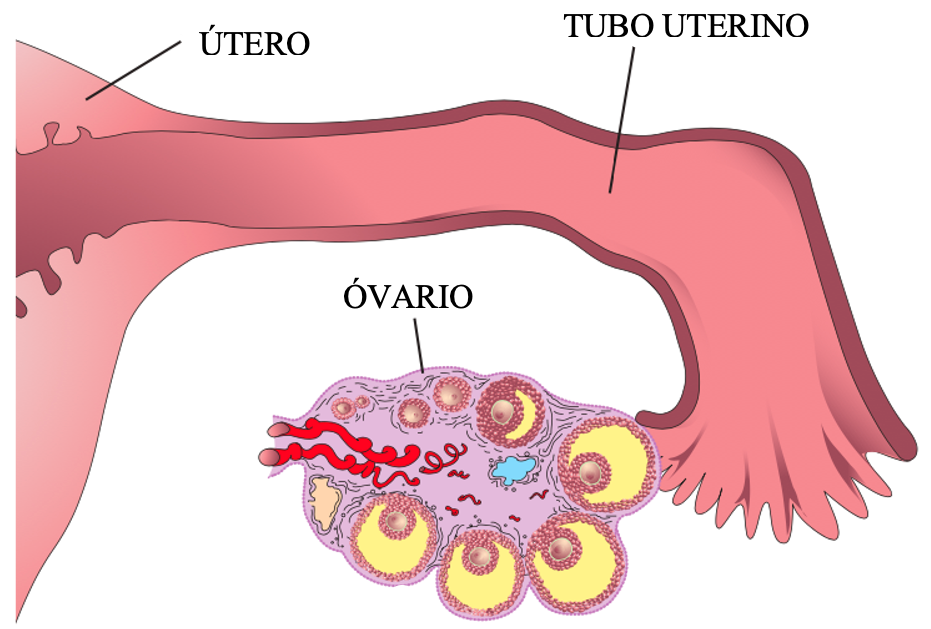
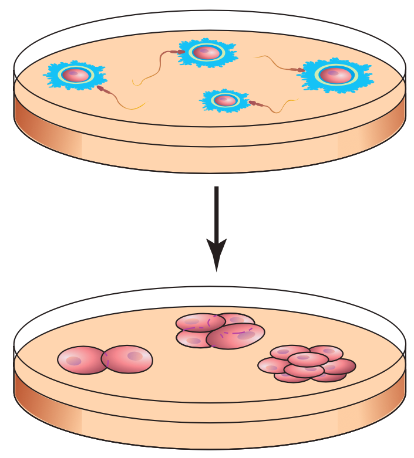
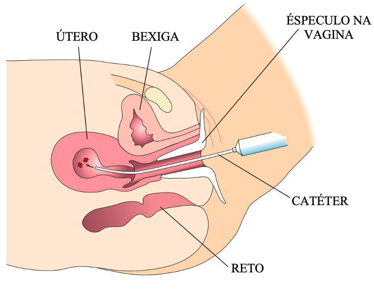

Quando é usado?
|
 |
Processo da estimulação ovariana e recolha dos óvulos:
A operação de remoção dos óvulos é feita através da inserção de uma agulha longa através da parede vaginal em direção à superfície do ovário. Guiada por ultra-som, a agulha entra em contato com cada folículo aumentado e o óvulo é removido por sucção. |
 |
Processo da Fertilização e da transferência de embriões:
A maioria das clínicas transfere apenas 2 a 3 embriões por FIV, os restantes podem ser congelados. |
 |